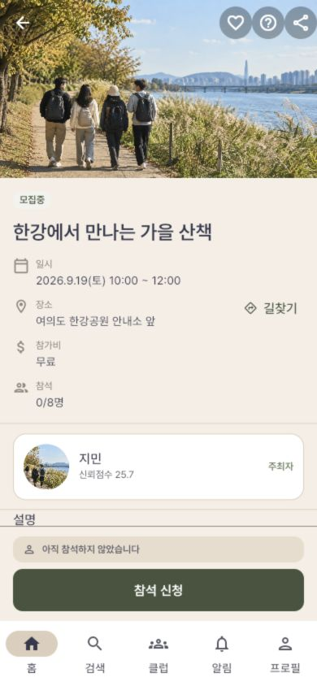

함께할 모임을 찾고,
함께한 순간을 이어갑니다.
산책 모임을 찾고, 클럽에 모여 이야기를 나누고, 함께한 시간을 기록하는 앱입니다. 실제 화면을 따라가며 각 기능이 언제 필요하고 어떻게 이어지는지 자세히 살펴보세요.
앱 전체는 21개 업무 영역입니다
아래는 먼저 촬영한 이용 흐름입니다. 정산·경고·분쟁·고객지원·제공자 운영을 포함한 175개 등재 기능과 추가 소개 여정을 별도로 대조합니다. 후속 출시 기능도 소개 대상에서 제외하지 않으며, 사진이 일부 있다는 사실을 업무 전체의 소개 완료로 세지 않습니다.
사진으로 따라가는 한 번의 만남
이번 토요일,
이번 토요일,
함께 걸어 볼까요?
홈에서 산책 사진을 발견한 민준은 모임의 일정과 준비물을 읽고 참가합니다. 클럽에서는 다음 코스를 투표하고, 함께한 풍경은 사진첩에 남깁니다.
회원이 보는 장면뿐 아니라 주최자가 준비하고 운영하는 화면도 함께 소개합니다.
모임을 읽고 참가하는 과정 보기 →
이어지는 기능 소개
아직 소개용 사진이 없는 기능입니다. 각 기능의 일부 장면만 촬영했으며, 모든 동작을 검증했다는 뜻은 아닙니다.